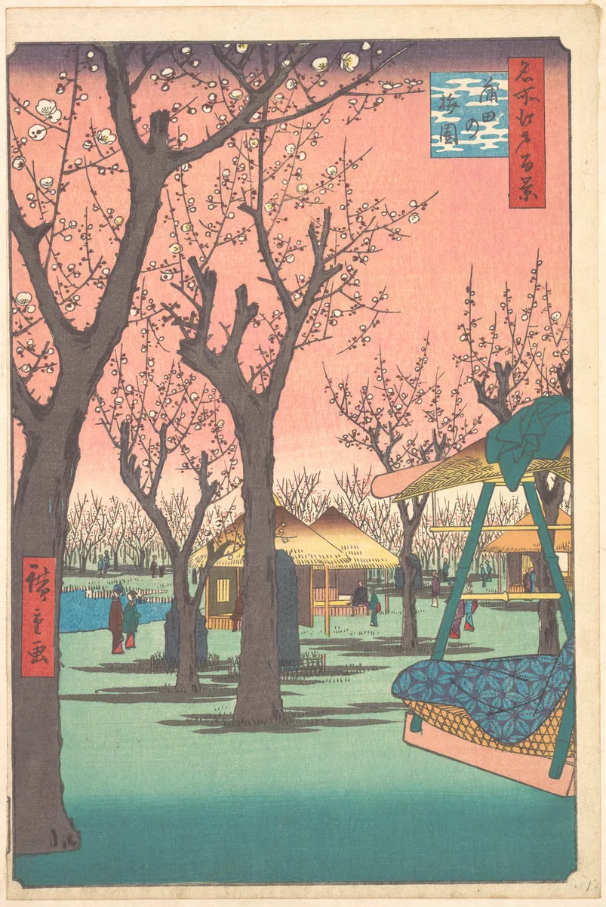
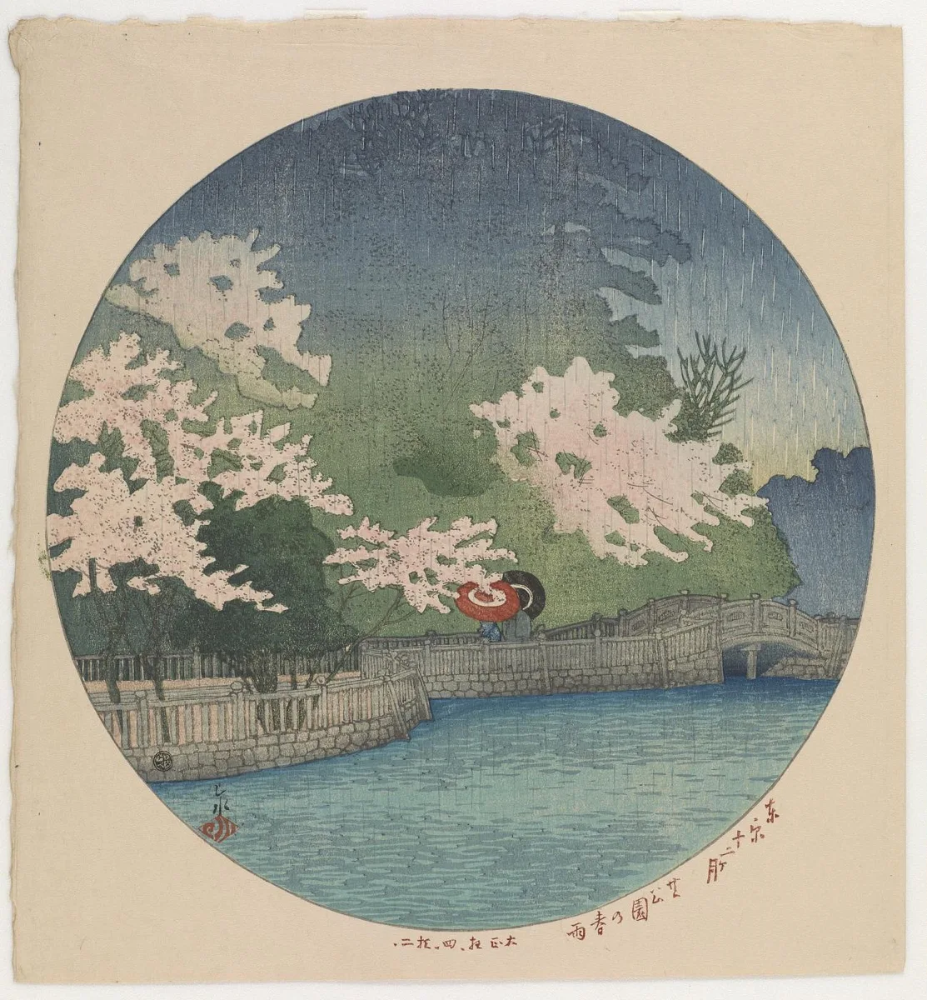
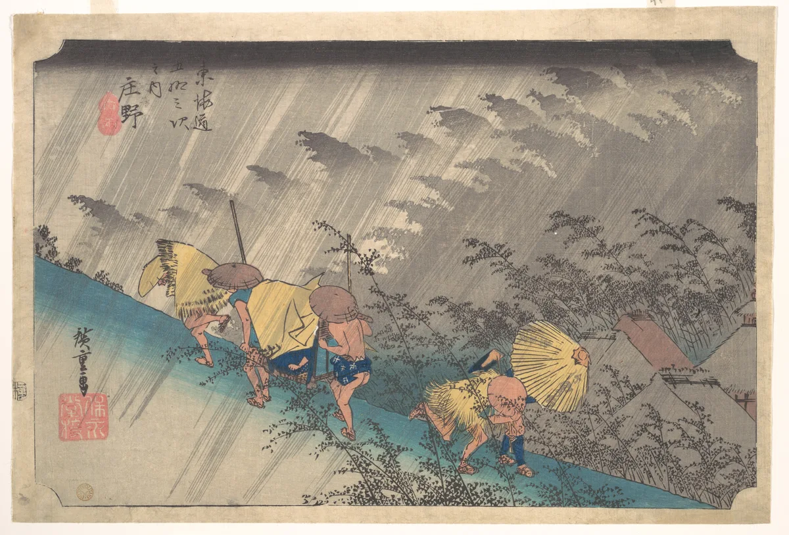
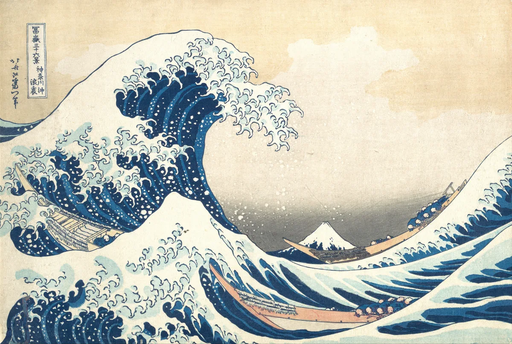
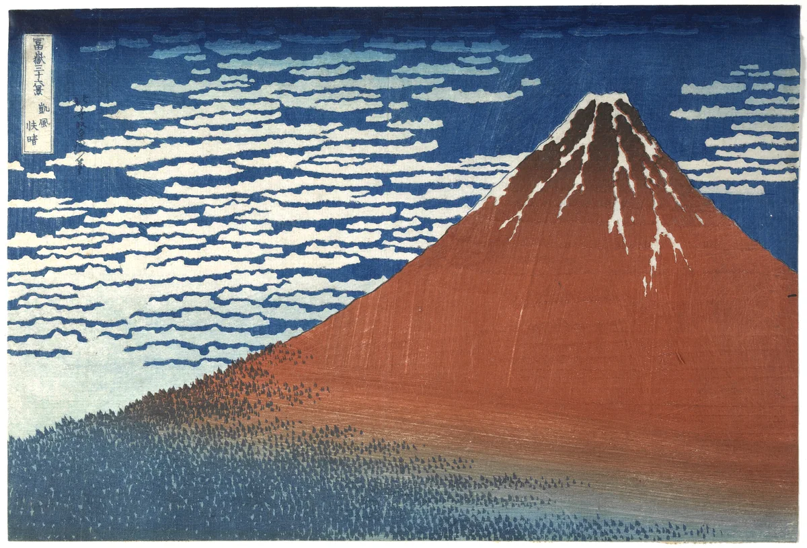
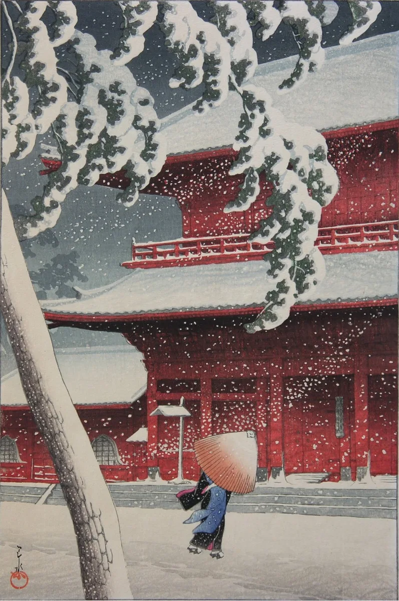

First signs of spring
Blossoms don’t arrive all at once. An Edo garden and a Tokyo park offer two ways to notice when spring has begun.


Plum Garden at Kamata
A late print from One Hundred Famous Views of Edo, a series that found subjects in the city’s gardens and ordinary outings as well as its landmarks.
Look closer
Start with the trees rather than the visitors. The nearest trunks form an irregular frame, and the small blossoms make you scan the whole sheet before the garden comes into focus.
The Metropolitan Museum of Art, Howard Mansfield Collection, Rogers Fund, 1936. Public domain. Collection record: Plum Garden at Kamata


Spring Shower at Shiba Park
From Twelve Months of Tokyo, a series published by Watanabe that makes changes in the city legible through the weather.
Look closer
Compare Hasui’s round composition with the rectangle of Hiroshige’s garden. The circular edge feels like a little window: the rain and branches could continue well beyond it.
Smithsonian’s National Museum of Asian Art, Robert O. Muller Collection, S2003.8.610. CC0. Collection record: Spring Shower at Shiba Park
Weather in motion
A rainstorm and a breaking wave show what a still image can do with a moment that’s already passing.


Sudden Shower at Shōno
From Fifty-three Stations of the Tōkaidō, which pictured stops on the road linking Edo and Kyoto. The Met notes that this particular view was likely invented.
Look closer
Follow the rain lines and then look at the angle of the hill. The crossed diagonals work against each other, making the travelers look as if they are pushing through the paper itself.
The Metropolitan Museum of Art, Rogers Fund, 1914. Public domain. Collection record: Sudden Shower at Shōno


Under the Wave off Kanagawa
Better known as The Great Wave, this print belongs to Thirty-six Views of Mount Fuji. The mountain is easy to miss at first, even though the series is named for it.
Look closer
Look at the small wave in front of Fuji: the two forms nearly rhyme. The sea anticipates the shape of the mountain just before the big crest breaks that stillness.
The Metropolitan Museum of Art, H. O. Havemeyer Collection, Bequest of Mrs. H. O. Havemeyer, 1929. Public domain. Collection record: Under the Wave off Kanagawa
Clear air, falling snow
End with two kinds of quiet: a mountain in clear weather, and the hush of a city street in snow.


Fine Wind, Clear Weather
Often called Red Fuji, this is another print from Thirty-six Views of Mount Fuji. Here the same small peak you saw under the wave takes up nearly the whole sheet.
Look closer
The cloud bands and dark trees pull your eye across the picture, while the mountain’s edges carry it back up. With no figures to follow, it’s the color that tells you something is happening.
Saint Louis Art Museum, Museum Purchase, 1051:1920. Public domain. Collection record: Fine Wind, Clear Weather


The Zōjō-ji Temple at Shiba
In this view of a Tokyo temple, Hasui uses the familiar woodblock medium to render a brief change in the look of the city. He was a leading landscape artist of the twentieth-century shin-hanga, or new prints, movement.
Look closer
Look for the nearly white ground where it meets the red gate. Where Hiroshige’s rain pushes the eye along a diagonal, Hasui’s snow seems to settle on every surface and slow the eye down.
Collection Walter Schmidt, scan via Wikimedia Commons. Public domain. Image source. Collection record: The Zōjō-ji Temple at Shiba